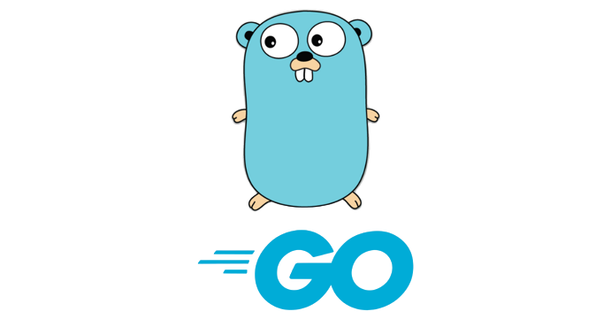
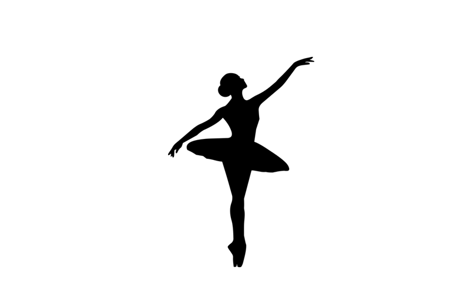

Молоді мови програмування, які вже підкоряють тренди
Go (Golang)
Займає перший рядок у рейтингу мов програмування, які хочуть
вивчити як розробники, що діють, так і новачки. Його часто
називають швейцарським ножем у сфері розробки: Go досить
простий і універсальний, а використовувати його можна для
різних завдань - від створення API до DevOps-інструментів. А
ще він має попит у великих компаній, які працюють з великими
даними. Тому володіння Go регулярно входить у топ
найоплачуваніших навичок.


Rust
Мова Rust поєднує в собі відразу кілька переваг - за
потужністю і продуктивністю він не поступається C ++, але
при цьому з безпеки пам'яті він перевершує багатьох
конкурентів. Ще один плюс - велике ком'юніті розробників,
які постійно випускають нові інструменти та доповнення.
Підтримку Rust висловлюють і технологічні гіганти - так, до
числа співзасновників Rust Foundation увійшли Facebook,
Amazon Web Services, Google, Huawei, Microsoft і Mozilla.
Kotlin
Мова програмування, розроблена компанією JetBrains, яка
досить швидко набрала популярності і стала в один ряд з
Java. Його широко використовують у мобільній розробці - саме
Kotlin застосовували при створенні додатків Trello, Evernote
та Coursera для Android. Основні переваги – це лаконічність
та безпека. За багатьма параметрами він перевершує Java, і
навіть вважається простішою мовою проти головним конкурентом
Scala.


Ballerina
Порівняно нова мова програмування, створена компанією WSO2
для роботи у хмарі. Ballerina є статичною типізованою мовою
загального призначення. Його синтаксис досить простий і
ґрунтується на поєднанні Go, Java, JavaScript та Python.
Особливо цікавим та перспективним для вивчення Ballerina
робить кроссплатформенність та спрямованість на інтеграцію.